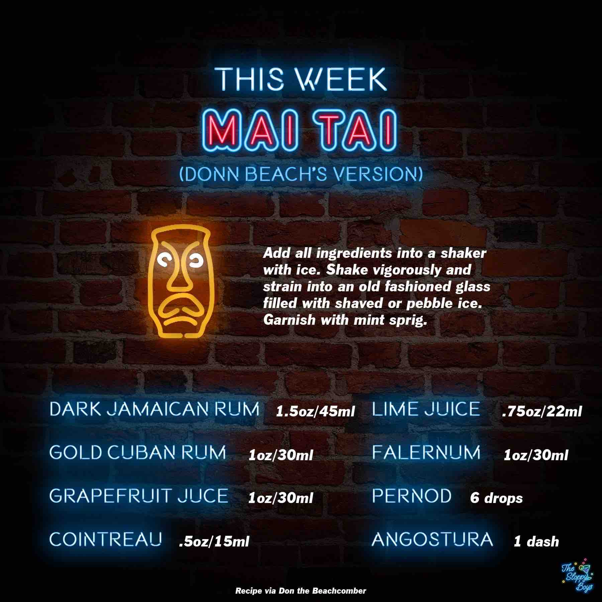

Mai Tai (Don the Beachcomber's Version)
Ingredients
- Dark Jamaican Rum (1.5oz/45ml)
- Gold Cuban Rum (1oz/30ml)
- Grapefruit Juice (1oz/30ml)
- Cointreau (.5oz/15ml)
- Lime Juice (.75oz/22ml)
- Falernum (1oz/30ml)
- Pernod (6 drops)
- Angostura (1 dash)
Steps
- Add all ingredients into a shaker with ice.
- Shake vigorously and strain into an old fashioned glass filled with shaved or pebble ice.
- Garnish with mint sprig.
Notes